| \(\dot{V}_{A,in}\) (sccm) | \(\dot{V}_{Y,in}\) (sccm) | \(\dot{V}_{Z,in}\) (sccm) | fA (%) |
|---|---|---|---|
| 30 | 0 | 0 | 99.9 |
| 30 | 0 | 50 | 93.8 |
| 30 | 0 | 100 | 83.8 |
| 30 | 0 | 150 | 75.1 |
| 30 | 50 | 0 | 91.5 |
| 30 | 50 | 50 | 82.1 |
| 30 | 50 | 100 | 74.2 |
| 30 | 50 | 150 | 64.7 |
21 Analysis of Kinetics Data from a PFR
Reaction Engineering Basics is not yet complete
The contents in this part of Reaction Engineering Basics are from an earlier draft. They will be completely revised in the final version of the book.
This chapter completes the Kinetics Data Analysis section of Reaction Engineering Basics. It focuses on the generation and analysis of kinetics data from a PFR. Chapter 18 presented an overview of kinetics data generation and analysis, and Chapters 19 and 20 examined analysis of data from BSTRs and CSTRs, respectively. Much of the information presented in those chapters also applies to PFRs and won’t be duplicated here.
21.1 Laboratory PFRs
In its most basic form, a PFR is simply a length of rigid tubing or pipe. Reagents flow in at one end and out at the other. The key assumption of the PFR model is that of plug flow. As explained in Chapter 6 and Appendix H, the fluid flow velocity is constant across the tube diameter in plug flow. There is no mixing in the axial direction, and perfect mixing in the radial direction. Thus, in contrast to stirred tank reactors, the composition varies spatially in a PFR. That is, as one moves from the reactor inlet to the reactor outlet, the concentrations of reactants decrease and those of products increase. (The temperature and pressure can also vary along the length of a PFR, but when generating kinetics data the reactor usually operated isothermally and with negligible pressure drop).
A second difference between PFRs and stirred tank reactors is that there is no agitation in PFRs. For this reason, PFRs are very often used to generate kinetics data for heterogeneous catalytic reactions. Recall, a heterogeneous catalyst is a material that exists as a separate phase from the reacting fluid and that causes the rate of one or more reactions to increase. Most commonly heterogeneous catalysts are porous solids that are immersed in the reacting fluid. It is difficult to agitate the solid particles if a stirred tank reactor is used, though this has been done. When a heterogeneous catalytic reaction is studied in a PFR, the catalyst is typically contained within the reactor tube as a stationary packed bed through which the reacting fluid flows. A section of pipe filled with small pellets or beads that are held in place by screens or other means offers a good mental picture of a packed bed.
The ideal PFR mole, energy and momentum balances can be used to model a packed bed reactor. To do so, the combined packed bed and reaction fluid are treated as if they are a single, homogeneous fluid. The most important assumption that this introduces to the analysis is that there are no concentration or temperature gradients at the interface between the solid and fluid phases or within the pores of the solid. In reality, there will be concentration and temperature gradients between the bulk of the fluid and the surface of the heterogeneous catalyst particles, and there will be gradients within the pores of the catalyst particles. This topic is considered in more detail in [fix cross reference]. For present purposes, the important point is that these gradients must be negligibly small if the PFR mole, energy and momentum balances from Chapter 6 are used to model the reactor.
21.1.1 Testing the Ideality of a PFR
Before a PFR is used to generate kinetics data, it should be tested to ensure it conforms to the asumptions of an ideal PFR. Importantly, it should be tested for plug flow, and if it is a packed bed, it should be tested for negligible concentration and temperature gradients.
Testing for plug flow is not easy. As noted in Appendix B, in laminar flow the radial velocity profile is parabolic, and it flattens as the flow becomes turbulent. The Reynolds number, \(N_{Re}\), offers a measure of how turbulent the flow is. It can be computed using Equation 21.1. In cylindrical pipes, a Reynolds number greater than ca. 3500 indicates turbulent flow; a much greater Reynolds number is needed in order to approach plug flow.
\[ N_{Re} = \frac{\rho vD}{\mu} \tag{21.1}\]
Smoke- or dye-based flow visualizations are useful for gauging the mixing in an agitated vessel, but they are difficult to apply for gauging plug flow. A related approach involves measuring the residence time distribution or age function for the reactor. Doing so is described in Chapter 23. The measured age distribution function can then be compared to that expected for plug flow to determine whether plug flow prevails in the reactor.
As noted above, when a tubular reactor contains a packed bed of solid particles, gradients in concentration and temperature can exist within the fluid that is close to the surface of the solid particles. When present, these are referred to as external gradients because they are external to the solid material. A common experimental test for external mass transfer limitations (i. e. for non-negligible external concentration gradients) in a packed bed reactor relies on the fact that for an ideal PFR, the conversion depends only upon the residence time within the reactor and not the linear velocity of the flowing fluid. The external mass transfer coefficient, in contrast, does depend upon the linear velocity of the flowing fluid. Thus, if the conversion changes when the linear velocity is changed while holding the residence time constant, this indicates that the apparent rate is being affected by the rate of external mass transfer.
One approach to this test is to measure the conversion at varying fluid velocities with a fixed amount of catalyst and plot the conversion versus the residence time. The experiment is then repeated using a different amount of catalyst. In the absence of mass transfer limitations, the plots should superimpose. An alternative approach is to measure the conversion with a given amount of catalyst and at a given fluid flow rate. The conversion is then measured again using a different amount of catalyst, but with a flow rate that gives the same residence time as in the first experiment. In the absence of external mass transfer limitations, the conversions should be equal. Care should be taken in applying this test, however, because at the very low Reynolds numbers that are often used in laboratory reactors, the mass transfer coefficient depends very weakly upon the fluid velocity (Chambers and Boudart 1966).
When external mass transfer limitations are very severe, a first-order rate expression, Equation 21.2, will be found to fit the experimental data very well. In this case it is more appropriate to refer to Equation 21.2 as the apparent rate expression because the rate it refers to is the rate of external mass transfer and not the rate of reaction. The true rate expression can be first-order, but when external mass transfer limitations are severe, the apparent activation energy, \(E\), will be very low (≲ 10 to 15 kJ mol-1). True reaction rates typically have activation energies that are greater than this. This can serve as a warning indicator when kinetics data are being analyzed. If the reaction kinetics are observed to change to first order and the activation energy is simultaneously observed to become small, the kinetics data may contain experiments where external transport limitations existed. There are also computational tests for external transport limitations that can be applied (Mears 1971; Satterfield 1980; Wheeler 1951).
\[ r=k_0\exp{\left( \frac{-E}{RT} \right)}C_i \tag{21.2}\]
Most heterogeneous catalysts are porous solids with very high specific surface areas. Most of this surface area is internal and corresponds to the walls of pores (picture the catalyst interior as looking like a microscopic sponge). The only way for reactants to reach the majority of the catalytic sites is to diffuse into the pore structure. If the rate of the reaction at the active sites is large, this can lead to the formation of significant internal concentration gradients within the pores. For present purposes, the goal is to be able to identify experimental conditions where these gradients are insignificantly small. As a general rule of thumb, internal concentration gradients are more likely than external concentration gradients.
One experimental test for the presence of internal heat or mass transfer limitations is to repeatedly measure the conversion using finer and finer catalyst particle sizes. In the absence of internal gradients, the conversion should not depend upon the particle size, but if gradients are present, their effects should diminish as the particle size is decreased. This happens because the diffusional path length becomes smaller as the particle size is decreased. Koros and Nowak (1967) suggest a test where the catalyst is prepared from two powders that are mixed and formed into catalyst pellets. One powder is inert while the other is catalytic. Two or more sets of pellets are prepared using different ratios of the powders. In the absence of internal gradients, the ratio of the observed rates should equal the ratio of amounts of the active powders used to prepare the catalysts. Madon and Boudart (1982) describe a similar test where the catalyst comprises very small active catalyst nanoparticles supported on a porous oxide carrier.
There are also a few computational tests for the presence of intraparticle temperature or concentration gradients. For an isothermal reaction, Equation 21.3 can be used to calculate \(\phi_s\). For a zero-order reaction, the effects of concentration gradients in the pores will be negligible if \(\phi_s\) is less than 6. For first order reactions it should be less than 1, and for second order reactions it should be less than 0.3.
\[ \phi_s = \frac{r_p^2\left( -r \right)}{D_{\text{eff}}C_i} \tag{21.3}\]
21.2 PFR Kinetics Experiments and Data
From an operational viewpoint, the procedure for performing kinetics experiments using a PFR is exactly the same as the procedure used with a CSTR. Each experiment will yield a single data point. As with the stirred tank reactors, experiments should be performed in blocks where all of the experiments in a block are performed at the same temperature to prevent the generally strong temperature dependence of reaction rates from masking weaker composition and pressure effects. Similarly, the PFR should operate at steady state so that the temperature of the reacting fluid is constant. Doing so allows kinetics data analysis using only the PFR mole balance design equations (as long as the pressure drop along the length of the reactor also is negligible).
21.2.1 Differential Operation
The mole balances for a steady-state PFR are initial-value ordinary differential equations (IVODEs). As was the case with BSTRs in Chapter 19, it is possible to analyze PFR kinetics data using an approximate mole balance. This method, described below, is known as the differential method of analysis of PFR data. Unlike differential analysis of BSTR data, if one plans to use the differential method of analysis for PFR data, then an additional restriction is imposed during the experiments. This requirement is that the molar flow rate of each reagent present in the feed should not change by more than ca. 5% between the inlet and the outlet of the reactor.
21.3 Design of PFR Experiments
It was noted in the preceding section that the operational procedure for generating kinetics data using a PFR is essentially the same as that for a CSTR. Both of these reactors are flow reactors, and consequently the adjusted inputs and experimental responses are the same. The space time determines the amount of time during which reaction can occur, and the space time is adjusted by varying individual reagent or total flow rates. In principle the reactor volume could also be varied to change space time, but doing so is impractical. The temperature is controlled directly making it easy to generate blocks of same-temperature kinetics data. In a PFR the composition changes continually as the reagents flow through the reactor. The composition and flow rate of the feed to the reactor can be varied so that the concentrations or partial pressures of the reagents each span their range of interest. As with BSTRs and CSTRs, the experimental response can be any quantity that is directly related to the composition of the fluid leaving the reactor or to the extent of reaction relative to the reactor feed.
21.4 PFR Data Analysis
Reaction Engineering Basics only considers the generation and analysis of kinetics data for single reactions occurring in isothermal, isobaric, steady-state PFRs. Further, it assumes that the data are generated in blocks where all of the experiments in a given block are conducted at the same temperature. When this is true, each of the same-temperature data blocks is first analyzed separately to find the best values of the rate expression parameters at that temperature. Once all of the data blocks have been analyzed, a second analysis is performed to find the best values of the pre-exponential factors and activation energies/enthalpies for the rate coefficients and unknown equilibrium constants. The second analysis was illustrated in the examples in Chapter 19. It does not involve the reactor model, but instead the Arrhenius expression, Equation 4.8, or the equivalent model for the equilibrium constant, Equation 4.12. As such, the second analysis is exactly the same no matter which of the ideal reactor types was used to generate the data. Since the analysis of the rate expression parameters obtained from the same-temperature data blocks has already been demonstrated in Chapter 19, the examples in this chapter focus upon the analysis of a single, same-temperature data block that was generated using a PFR. However, see the notes that follow Examples 21.5.2 and 21.5.3.
Only the PFR mole balance is necessary to analyze a single data block because when the reactor operates isobarically and isothermally at a known temperature, the mole balances can be solved independently of the energy and momentum balances for the reactor. The PFR mole balance was derived in Chapter 6, and the steady-state version is given in Equation 6.39. In Reaction Engineering Basics kinetics data analysis problems, there is only one reaction taking place, so there is only one rate term, making it unnecessary to index the reaction, Equation 21.4.
\[ \frac{d \dot n_i}{d z} =\frac{\pi D^2}{4}\nu_{i}r \tag{21.4}\]
This reactor model is an IVODE, and in order to solve it, every quantity appearing in or substituted into it must be expressed in terms of known constants, the independent variable, \(z\), and the dependent variable, \(\dot{n}_i\). When a rate expression is substituted into Equation 21.4, it generally will introduce either concentrations or partial pressures. Since this is a flow system, these quantities can be expressed in terms of the molar flow rate of reagent \(i\) using Equations 1.15, 20.2, and 20.3.
\[ C_i = \frac{\dot n_i}{\dot V} \]
\[ P_i = y_iP = \frac{\dot{n}_iP}{\displaystyle \sum_i\left( \dot{n}_i \right)} \]
\[ C_i = \frac{\dot n_iP}{RT\displaystyle \sum_i\left( \dot{n}_i \right)} \]
If only one mole balance is being used in the analysis, the concentrations or partial pressures of reagents other than \(i\) can be related to the molar flow rate of \(i\) using the apparent extent of reaction as described in Chapter 3 and illustrated in Example 19.5.2.
When the reactor temperature is known and only the mole balance design equations are being used to analyze the data, the cumulative reactor volume, \(V\), is sometimes used as the independent variable instead of the axial distance into the reactor, \(z\). When this is done, it is not necessary to know both the reactor diameter and length, only the reactor volume is needed. Changing the independent variable in the PFR mole balance, Equation 21.4, from \(z\) to \(V\) is straightforward. Dividing both sides of the equation by the reactor cross-sectional area and recognizing that the cross-sectional area time an increment in the axial position, \(dz\), is equal to an increment in the volume, \(dV\), leads to the desired form of the mole balance, Equation 21.5.
\[ \frac{d \dot n_i}{d z} =\frac{\pi D^2}{4}\nu_{i}r \]
\[ \frac{d \dot n_i}{\displaystyle\frac{\pi D^2}{4}d z} = \nu_{i}r \]
\[ \frac{d \dot n_i}{dV} = \nu_{i}r \tag{21.5}\]
PFRs are commonly used to generate kinetics data for heterogeneous catalytic reactions. Using the pseudo-homogeneous approximation described in Appendix H, the ideal PFR design equations can still be used to analyze the data. However, it is a very common practice to normalize heterogeneous catalytic reaction rates using the catalyst mass instead of the reacting fluid volume. If \(\rho_{\text{bed}}\) is the apparent packed bed density, that is the combined volume of the solid catalyst and the fluid per mass of catalyst, the mole balance takes the form shown in Equation 21.6 where the rate has units of mol time-1 (catalyst mass)-1. The mass of catalyst can also be used as the independent variable by simply dividing both sides of Equation 21.6 by the apparent bed density and the reactor cross-sectional area, Equation 21.7 where the rate again has units of mol time-1 (catalyst mass)-1.
\[ \frac{d \dot n_i}{d z} =\frac{\pi D^2}{4}\nu_{i}\rho_{\text{bed}} r \tag{21.6}\]
\[ \frac{d \dot n_i}{dm} =\nu_{i} r \tag{21.7}\]
Finally, if the reactor was operated differentially when generating the data, an approximate mole balance can be used, Equation 21.8. This is completely analogous to the approximate mole balance used for analysis of BSTR data. It converts the mole balance from an IVODE to an algebraic-transcendental equation (ATE). The derivative can be approximated using backward, forward or central differences (see Appendix B). The approximation of the derivative as the ratio, \(\frac{\Delta \dot n_i}{\Delta z}\), is only valid when the changes in \(\dot n_i\) and \(z\) are small. That is why it is necessary to operate the reactor differentially for this type of analysis.
\[ \frac{d \dot n_i}{d z} =\frac{\pi D^2}{4}\nu_{i}r \approx \frac{\Delta \dot n_i}{\Delta z} =\frac{\pi D^2}{4}\nu_{i}r \tag{21.8}\]
21.4.1 Analysis Using a Response Function
The analysis of PFR kinetics data using a response function is analogous to the analysis of BSTR kinetics data using a response function. A response function is created that is passed the adjusted experimental inputs and values for the rate expression parameters as arguments. Within the response function, the reactor model (the IVODE PFR mole balances) is solved for each experiment to find the outlet molar flow rates of all reagents. The results are then used to calculate the model-predicted value of the response. The response function returns the model-predicted responses for all of the experiments.
The response function is then used as an argument in parameter estimation software along with the adjusted experimental inputs, the experimental responses, and a guess for the parameters. The parameter estimation software returns the estimated values of the rate expression parameters, their 95% confidence intervals and the coefficient of determination, \(R^2\). The estimated parameters can then be used to calculate the model-predicted responses for the experiments. From these, a parity plot and residuals plots can be created. If the rate expression is accurate, the following criteria will be satisfied.
- The coefficient of determination, \(R^2\), will be close to 1.
- The uncertainty in each parameter estimate will be small compared to the estimate (so the confidence interval is narrow relative to the parameter value).
- The points in the parity plot will all be close to a diagonal line (\(y_{\text{expt}} = y_{\text{model}}\)).
- In each residuals plot, the points will scatter randomly about zero (the horizontal axis), and no systematic deviations will be apparent.
21.4.2 Analysis Using a Linearized Model
When only one reaction is taking place, as is always the case in Reaction Engineering Basics kinetics data analysis problems, the reactor can be modeled using only one mole balance on a reactant or product in the reaction. When this is done, the apparent extent of reaction is used to relate the amounts of all other reagents to the reagent for which the mole balance is written. Sometimes the single mole balance can be solved analytically, for example by separation of variables. Doing so yields an integrated mole balance that is an ATE. If the integrated mole balance can be rearranged into a linear form, the model can be fit to the experimental data using linear least squares. This was described in in Chapter 18 and illustrated in Chapter 19 and won’t be repeated or illustrated in this chapter.
21.4.3 Analysis Using an Approximate Reactor Model
This approach, commonly referred to a differential data analysis, is completely analogous to differential analysis of BSTR data. The one significant difference is that to use differential data analysis with PFR data, the reactor must have been operated differentially when the data were generated. The mole balance given in Equation 21.8 is used. As noted in Chapter 19, the approximate mole balance is often linearized and the analysis is performed using linear least squares. In most cases, differential analysis is less accurate than analysis using a response function or a linearized integrated mole balance. Since differential data analysis was illustrated in Chapter 19, it is not repeated in the examples of this chapter.
21.5 Examples
The start of the Examples sections of Chapters 19 and 20 noted that before a reaction engineer can solve a problem, they must identify what type of problem it is. The following callout was provided. It should be mentally insert it at the start of every example this chapter.
Click Here to See What an Expert Might be Thinking after Reading each Problem Statement in this Chapter
This assignment involves “kinetics data analysis.” I realize that because the problem statement includes 3 distinguishing characteristics of kinetics data analysis assignments.
- The problem statement describes reactor experiments involving a known reaction.
- The data resulting from performing those experiments are provided.
- The assignment is to generate a rate expression or estimate the parameters in a proposed rate expression and then assess its accuracy using those data.
I know that the preferred way of performing experiments results in sub-sets (or blocks) of the data that each contain a number of experiments all performed at the same temperature. I further know that when this is true, each same-temperature block is first analyzed separately to estimate values of the kinetics parameters at that block’s temperature.
Thus, to begin this assignment I need to do the following things.
- Separate the experimental data into same temperature blocks.
- Identify (a) the reactor inputs that were varied from experiment, (b) the reactor response that was measured in each experiment, and (c) the rate expression parameters that need to be estimated for each block.
- Develop a mathematical model that relates the adjusted inputs to the measured response.
- Estimate the rate expressions parameters for each block and assess the accuracy of the resulting rate expression for that block.
It was noted earlier in this chapter that each of the examples here illustrate the analysis of a single constant-temperature data block. That analysis yields values of the rate expression parameters at that temperature. Typically, this would be repeated several times using data blocks at different temperatures. Then the results would be collected and used to estimate additional parameters associated with the temperature dependence of the rate expression parameters. Most commonly, the analysis of the individual data blocks yields values for a rate coefficient at each of the data block temperatures. They are collected and used to estimate the value of the Arrhenius pre-exponential factor and activation energy for that rate coefficient. The Arrhenius analysis, as well as alternative analysis of the data blocks using a linearized reactor model and/or an approximate reactor model are not presented here. For that see Examples 4.5.4, 19.5.1, and 19.5.2.
21.5.1 Kinetics of Gas-Phase Decomposition
The gas-phase decomposition of reagent A, reaction (1), was studied 1 atm using a PFR with a diameter of 1.0 cm and a length of 10 cm. The inlet volumetric flow rates of reagents A, Y, and Z, in standard cm3 min-1, were varied from experiment to experiment. In all experiments the outlet conversion of reagent A was measured. The data for a block of experiments at a temperature of 1500 K are presented below. Using those data, assess the accuracy of the rate expression given in equation (2), paying particular attention to whether the expression might not capture possible effects of the concentrations of Y and Z.
\[ A \rightarrow Y + Z \tag{1} \]
\[ r = kP_A \tag{2} \]
The first few data points are shown in Table 21.1; the full data set are available in the file, reb_21_1_data.csv.
Click Here to See What an Expert Might be Thinking at this Point
This is a kinetics data analysis assignment. It describes reactor experiments, provides the resulting data and asks me to assess a rate expression. Here I will solve it using a response function, so I need to identify the experimentally adjusted inputs and the measured response. At the same time, I can summarize the other information provided in the problem statement.
Reactor: PFR
Given: \(P=1\text{ atm}\), \(D=1\text{ cm}\), \(L=10\text{ cm}\), and \(T=1500\text{ K}\).
Adjusted Inputs: \(\underline{\dot{V}}_{A\text{(STP)},in}\), \(\underline{\dot{V}}_{Y\text{(STP)},in}\), and \(\underline{\dot{V}}_{Z\text{(STP)},in}\).
Experimental Response: \(\underline{f}_A\).
Rate Expression Parameters: \(k\).
Click Here to See What an Expert Might be Thinking at this Point
The purpose of the response function is to solve the reactor design equations for each experiment and use the results to calculate the predicted value of the response. The reactor used here is a PFR. The reactor operated isothermally, and there is no mention of pressure drop, so I don’t need a momentum balance, and I can solve the mole balance design equations separately from the energy balances. The mole balance design equation for a steady-state, PFR with only one reaction taking place is given in Equation 21.4.
\[ \frac{d \dot n_i}{d z} =\frac{\pi D^2}{4}\nu_{i}r \]
Since there are three reagents in this system, I need to write a mole balance for each of them. Noting that the stoichiometric coefficients are \(\nu_A = -1\), \(\nu_Y = 1\), and \(\nu_Z = 1\) leads to equations (3) through (5). The design equations are initial value ordinary differential equations (IVODEs) with the molar flow rates as the dependent variables and the axial position as the independent variable. I can define \(z=0\) to be the inlet to the reactor. The initial values needed to solve the IVODEs are the molar flow rates of A, Y, and Z at the inlet. I can use \(\dot{n}_{A,in}\), \(\dot{n}_{B,in}\), and \(\dot{n}_{Z,in}\), to represent those inlet molar flow rates. The reaction stops at the end of the reactor, so the stopping criterion is \(z=L\).
Reactor Model
Mole balances on A, Y, and Z are shown in equations (3), (4), and (5). The initial values and stopping criterion needed to solve them are given in Table 21.2
\[ \frac{d\dot{n}_A}{dz} = -\frac{\pi D^2}{4}r \tag{3} \]
\[ \frac{d\dot{n}_Y}{dz} = \frac{\pi D^2}{4}r \tag{4} \]
\[ \frac{d\dot{n}_Z}{dz} = \frac{\pi D^2}{4}r \tag{5} \]
| Variable | Initial Value | Stopping Criterion |
|---|---|---|
| \(z\) | \(0\) | \(L\) |
| \(\dot{n}_A\) | \(\dot{n}_{A,in}\) | |
| \(\dot{n}_Y\) | \(\dot{n}_{Y,in}\) | |
| \(\dot{n}_Z\) | \(\dot{n}_{Z,in}\) |
Click Here to See What an Expert Might be Thinking at this Point
Before I can solve the mole balance IVODEs, I need to go through the equations, initial values and stopping criterion, and any equations that will be substituted into them, and express every quantity that appears in them in terms of known constants, the independent variable (\(z\)) and the dependent variables (\(\dot{n}_A\), \(\dot{n}_Y\), and \(\dot{n}_Z\)). Within the response function, the values of the adjusted inputs and the rate expression parameter will be know and constant, so I don’t need expressions for them. I can see that when the rate expression, equation (2), is substituted into the mole balances it will introduce the partial pressure of A, so I need an expression for that. I am given the inlet (standard) volumetric flow rates of the reagents, so I’ll need to calculate the molar flow rates at the inlet, since they are the initial values.
For the partial pressure of A, I can just use the defining equation, Equation 1.19. The volumetric flow rates given in the assignment are volumetric flows at standard temperature and pressure (STP). The molar volume of an ideal gas at STP, \(\hat{V}_\text{ STP}\), is a known constant, e. g. 22.4 L mol-1, and can be used to calculate the inlet molar flows from the given inlet volumetric flows. (Note that if, instead, the assignment had provided actual inlet volumetric flows, the ideal gas law would be used and not \(\hat{V}_\text{ STP}\).)
Ancillary Equations
\[ P_A = \frac{\dot{n}_A}{\dot{n}_A+\dot{n}_Y + \dot{n}_Z}P \tag{6} \]
\[ \dot{n}_A\Big\vert_{z=0} = \dot{n}_{A,in} = \frac{\dot{V}_{A\text{(STP)},in}}{\hat{V}_{\text{ STP}}} \tag{7} \]
\[ \dot{n}_Y\Big\vert_{z=0} = \dot{n}_{Y,in} = \frac{\dot{V}_{Y\text{(STP)},in}}{\hat{V}_{\text{ STP}}} \tag{8} \]
\[ \dot{n}_Z\Big\vert_{z=0} = \dot{n}_{Z,in} = \frac{\dot{V}_{Z\text{(STP)},in}}{\hat{V}_{\text{ STP}}} \tag{9} \]
Click Here to See What an Expert Might be Thinking at this Point
At this point within the response function, the mole balance design equations can be solved to find the values of the dependent variables, \(\dot{n}_A\), \(\dot{n}_Y\), and \(\dot{n}_Z\), at the reactor outlet. Those results then must be used to calculate the predicted value of the response. In this study, the response was the fractional conversion of A, which can be calculated using the definition of fractional conversion, Equation 3.5.
Response Calculation
\[ f_A = \frac{\dot{n}_{A,in} - \dot{n}_A}{\dot{n}_{A,in}} \tag{10} \]
Response Function
The response function is created with the following structure:
- The adjusted inputs, \(\underline{\dot{V}}_{A\text{(STP)},in}\), \(\underline{\dot{V}}_{Y\text{(STP)},in}\), and \(\underline{\dot{V}}_{Z\text{(STP)},in}\), and the rate expression parameter, \(k\), are passed to it as arguments.
- Variables are defined and assigned the values of all known and given quantities: \(P=1\text{ atm}\), \(D=1\text{ cm}\), \(L=10\text{ cm}\), and \(T=1500\text{ K}\).
- A function that evaluates the derivatives in the design equations given values of the independent variable, \(z\), and the dependent variables, \(\dot{n}_A\), \(\dot{n}_Y\), and \(\dot{n}_Z\), is defined. It
- Calculates \(P_A\) using equation (6).
- Calculates \(r\) using equation (2).
- Evaluates and returns the values of the derivatives, equations (3) through (5).
- For each experiment, the response function
- Calculates \(\dot{n}_{A,in}\), \(\dot{n}_{B,in}\), and \(\dot{n}_{Z,in}\) using equations (7) through (9).
- Solves the design equations using the initial values and stopping criterion in Table 21.2 to find \(\dot{n}_A\), \(\dot{n}_Y\), and \(\dot{n}_Z\) at \(z=L\).
- Calculates \(f_A\) using equation (10).
- The values of \(f_A\) for all of the experiments are returned.
Calculations
- Pass the response function, the adjusted inputs, and the experimental responses to parameter estimation software to find \(k\), the uncertainty in \(k\), and the coefficient of determination, \(R^2\).
- Use the resulting value of \(k\) to create a parity plot (\(F_{A,\text{ expt}}\) vs. \(F_{A,\text{ model}}\)) and residuals plots (\(F_{A,\text{ expt}} - F_{A,\text{ model}}\) vs. \(\dot{V}_{A,in}\), vs. \(\dot{V}_{Y,in}\), and vs. \(\dot{V}_{Z,in}\),)
Results
To estimate \(k\), the response function as described above was passed to parameter estimation software along with the adjusted experimental inputs, the measured experimental responses, and a guess for \(k\). The results returned by that software are shown in Table 21.3.
| k | 1.5 x 10-3 mol cm-3 min-1 atm-1, 95% CI [1.49 x 10-3, 1.51 x 10-3] |
| R2 | 0.993 |
A parity plot and residuals plots were generated as described above, and are shown in Figure 21.1
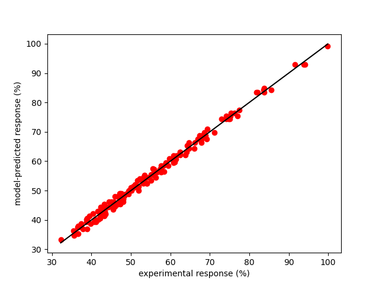
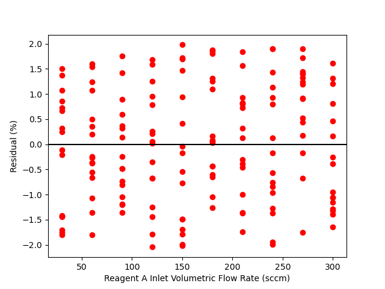
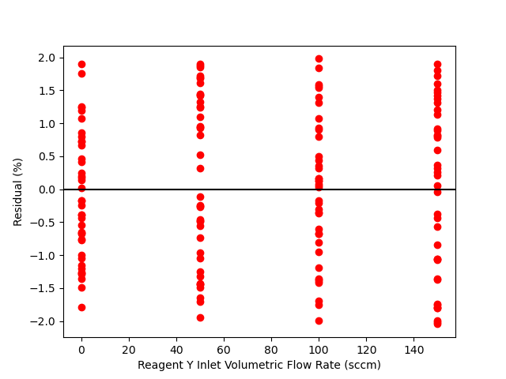
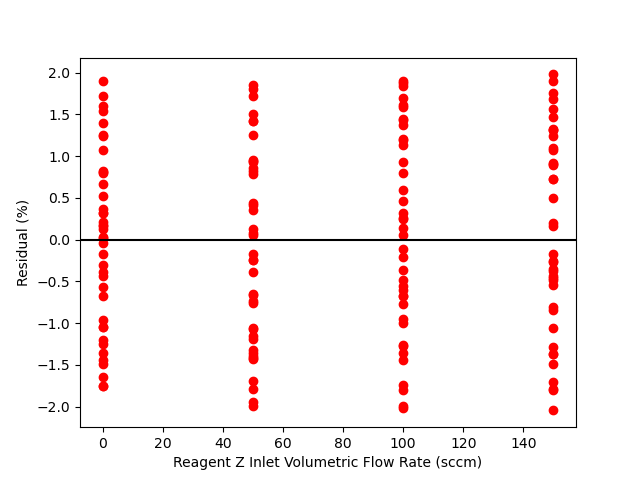
Click Here to See What an Expert Might be Thinking at this Point
By all criteria, the rate expression appears to be very accurate. The coefficient of determination is close to 1.0, the upper and lower limits of the 95% confidence interval for \(k\) are very close to the value of \(k\), the points in the parity plot are all very close to the diagonal line, and in each of the residuals plots the scatter is random with no apparent trends.
If the reaction was functionally dependent on the partial pressure of Y or Z, I wuld expect to see some systematic trends in the Y and Z parity plots. There does not appear to be any trends in those plots.
Assessment
When the rate coefficient in Table 21.3 is used in the proposed rate expression, it is acceptably accurate. The data do not indicate any functional dependence of the rate upon the paritial pressures of Y or Z.
21.5.2 Power-Law Kinetics of a Heterogeneous Catalytic Reaction
Reversible, gas-phase reaction (1) was studied in a PFR at 1 atm and several temperatures. In all experiments the same amount of catalyst, 3.0 g, was present in the reactor, forming a small packed bed. The apparent density of the catalyst bed was constant, and pressure drop across the catalyst bed was negligible. The inlet volumetric flow rate was also the same in all experiments and equal to 0.85 L min-1 at standard temperature and pressure. The inlet mole fractions of A, B, Y, and Z were varied in the experiments and the partial pressure of A at the reactor outlet was recorded. Use the data for a block of experiments at 400 °C presented below to assess the accuracy of the power-law rate expression shown in equation (2). The equilibrium constant, \(K\), in equation (2) can be calculated from available thermodynamic data. At 400 °C the value of \(K\) is 12.2.
\[ A + B \rightarrow Y + Z \tag{1} \]
\[ r = kP_{A}^{\alpha_A}P_{B}^{\alpha_B}P_{Y}^{\alpha_Y}P_{Z}^{\alpha_Z}\left( 1 - \frac{P_YP_Z}{KP_AP_B} \right) \tag{2} \]
The first few data points are shown in Table 21.4; the full data set are available in the file, reb_21_2_data.csv.
| yA,in | yB,in | yY,in | yZ,in | PA,out (atm) |
|---|---|---|---|---|
| 0.3 | 0.231 | 0.155 | 0.314 | 0.254 |
| 0.3 | 0.231 | 0.234 | 0.234 | 0.263 |
| 0.3 | 0.231 | 0.310 | 0.159 | 0.262 |
| 0.3 | 0.350 | 0.115 | 0.234 | 0.252 |
| 0.3 | 0.350 | 0.175 | 0.175 | 0.245 |
| 0.3 | 0.350 | 0.231 | 0.119 | 0.251 |
| 0.3 | 0.462 | 0.079 | 0.159 | 0.233 |
| 0.3 | 0.462 | 0.119 | 0.119 | 0.237 |
Click Here to See What an Expert Might be Thinking at this Point
This is a kinetics data analysis problem. I will begin by listing the reactor type, known constants, inputs that were adjusted during the experiments, response that was measured in the experiments, and rate expression parameters that need to be estimated.
Reactor: PFR
Given: \(P=1\text{ atm}\), \(m_{\text{cat}}=3\text{ g}\), \(\dot{V}_{in}=0.85\text{ L min}^{-1}\), \(T=400\text{ °C}\), and \(K = 12.2\).
Adjusted Inputs: \(\underline{y}_{A,in}\), \(\underline{y}_{B,in}\), \(\underline{y}_{Y,in}\), and \(\underline{y}_{Z,in}\).
Experimental Response: \(\underline{P}_A\).
Rate Expression Parameters: \(k\), \(\alpha_A\), \(\alpha_B\), \(\alpha_Y\), and \(\alpha_Z\).
Click Here to See What an Expert Might be Thinking at this Point
The first step in solving a kinetics data analysis problem is to create a response function. The response function solves the reactor design equations for the experimental reactor and uses the results to calculate a predicted value for each measured response. Thus, the first thing I need to do is to write the reactor design equations for the experimental reactor. Since the reactor is isobaric and isothermal, and its temperature is known, I can model it using only mole balances on the reagents A, B, Y, and Z. The reaction is catalytic and the size of the reactor is not provided. The mass of catalyst is provided, so I will use a form of the PFR mole balance where the catalyst mass is the independent variable, Equation 21.7, and the rate is normalized by the catalyst mass. The stoichiometric coefficients of A, B, Y, and Z are -1, -1, 1, and 1, respectively.
\[ \frac{d \dot n_i}{dm} =\nu_{i} r \]
The design equations are IVODEs, so initial values and a stopping criterion are needed in order to solve them. At the inlet to the reactor, the catalyst mass is equal to zero, \(m=0\), and at the end of the reactor it is equal to \(m_{\text{cat}}\). Letting \(\dot{n}_{A,in}\), \(\dot{n}_{B,in}\), \(\dot{n}_{Y,in}\), and \(\dot{n}_{Z,in}\) represent the molar flow rates at the reactor inlet then leads to the initial values and stopping criterion shown in Table 21.5.
Reactor Model
Mole balances on A, B, Y, and Z, are presented in equations (3) through (6), and the corresponding initial values and stopping criterion are shown in Table 21.5.
\[ \frac{d\dot{n}_A}{dm} = -r \tag{3} \]
\[ \frac{d\dot{n}_B}{dm} = -r \tag{4} \]
\[ \frac{d\dot{n}_Y}{dm} = r \tag{5} \]
\[ \frac{d\dot{n}_Z}{dm} = r \tag{6} \]
| Variable | Initial Value | Stopping Criterion |
|---|---|---|
| \(m\) | \(0\) | \(m_{\text{cat}}\) |
| \(\dot{n}_A\) | \(\dot{n}_{A,in}\) | |
| \(\dot{n}_B\) | \(\dot{n}_{B,in}\) | |
| \(\dot{n}_Y\) | \(\dot{n}_{Y,in}\) | |
| \(\dot{n}_Z\) | \(\dot{n}_{Z,in}\) |
Click Here to See What an Expert Might be Thinking at this Point
Since the mole balances are IVODEs, I will need to express every quantity that appears in them or is substituted into them in terms of known constants, the independent variable, \(m\), and the dependent variables, \(\dot{n}_A\), \(\dot{n}_B\), \(\dot{n}_Y\), and \(\dot{n}_Z\) before I can solve them. When the rate expression is substituted into equations (3) through (6) it will introduce the partial pressures of each of the reagents. These can be related to the molar flow rates using Equation 1.19.
\[ P_i = y_iP = \frac{\dot n_iRT}{\dot V} = C_iRT \]
The rate expression parameters and the adjusted inputs will be available in the response function, so no other expression need to be substituted into the design equations. However, the initial values are not known and must be calculated. Letting \(\hat{V}_{STP}\) represent the standard molar volume of an ideal gas, 22.4 mol L-1, the inlet volumetric flow rate divided by the standard molar volume yields the molar flow rate. Multiplying that by the inlet mole fraction yields the needed inlet molar flow rates.
Ancillary Equations
\[ P_A = \frac{\dot{n}_A}{\dot{n}_A++\dot{n}_B+\dot{n}_Y+\dot{n}_Z}P \tag{7} \]
\[ P_B = \frac{\dot{n}_B}{\dot{n}_A++\dot{n}_B+\dot{n}_Y+\dot{n}_Z}P \tag{8} \]
\[ P_Y = \frac{\dot{n}_Y}{\dot{n}_A++\dot{n}_B+\dot{n}_Y+\dot{n}_Z}P \tag{9} \]
\[ P_Z = \frac{\dot{n}_Z}{\dot{n}_A++\dot{n}_B+\dot{n}_Y+\dot{n}_Z}P \tag{10} \]
\[ \dot{n}_A\Big\vert_{m=0} = \dot{n}_{A,in} = y_{A,in}\frac{\dot{V}_{in}}{\hat{V}_{STP}} \tag{11} \]
\[ \dot{n}_B\Big\vert_{m=0} = \dot{n}_{B,in} = y_{B,in}\frac{\dot{V}_{in}}{\hat{V}_{STP}} \tag{12} \]
\[ \dot{n}_Y\Big\vert_{m=0} = \dot{n}_{Y,in} = y_{Y,in}\frac{\dot{V}_{in}}{\hat{V}_{STP}} \tag{13} \]
\[ \dot{n}_Z\Big\vert_{m=0} = \dot{n}_{Z,in} = y_{Z,in}\frac{\dot{V}_{in}}{\hat{V}_{STP}} \tag{14} \]
Click Here to See What an Expert Might be Thinking at this Point
With the information just provided, the mole balances can be solved within the response function to find the outlet molar flow rates of A, B, Y, and Z. The response in this problem is the partial pressure of A. Therefore, the model-predicted response can be calculated using equation (7).
Response Calculation
The predicted value of the measured response can be calculated using equation (7).
Response Function
The response function is created with the following structure:
- The adjusted inputs, \(\underline{y}_{A,in}\), \(\underline{y}_{B,in}\), \(\underline{y}_{Y,in}\), and \(\underline{y}_{Z,in}\), and the rate expression parameters, \(k\), \(\alpha_A\), \(\alpha_B\), \(\alpha_Y\), and \(\alpha_Z\), are passed to it as arguments.
- Variables are defined and assigned the values of all known and given quantities: \(P=1\text{ atm}\), \(m_{\text{cat}}=3\text{ g}\), \(\dot{V}_{in}=0.85\text{ L min}^{-1}\), \(T=400\text{ °C}\), and \(K = 12.2\).
- A function that evaluates the derivatives in the design equations given values of the independent variable, \(m\), and the dependent variables, \(\dot{n}_A\), \(\dot{n}_B\), \(\dot{n}_Y\), and \(\dot{n}_Z\), is defined. It
- Calculates \(P_A\), \(P_B\), \(P_Y\), and \(P_Z\) using equations (7) through (10).
- Calculates \(r\) using equation (2).
- Evaluates and returns the values of the derivatives, equations (3) through (6).
- For each experiment, the response function
- Calculates \(\dot{n}_{A,in}\), \(\dot{n}_{B,in}\), \(\dot{n}_{Y,in}\), and \(\dot{n}_{Z,in}\) using equations (11) through (14).
- Solves the design equations using the initial values and stopping criterion in Table 21.5 to find \(\dot{n}_A\), \(\dot{n}_B\), \(\dot{n}_Y\), and \(\dot{n}_Z\) at the reactor outlet where \(m = m_{\text{cat}}\).
- Calculates \(P_A\) using equation (7).
- The predicted values of \(P_A\) for all of the experiments are returned.
Calculations
- Pass the response function, the adjusted inputs, and the experimental responses to parameter estimation software to find \(k\), \(\alpha_A\), \(\alpha_B\), \(\alpha_Y\), and \(\alpha_Z\),, the uncertainty in \(k\), \(\alpha_A\), \(\alpha_B\), \(\alpha_Y\), and \(\alpha_Z\),, and the coefficient of determination, \(R^2\).
- Use the resulting values of \(k\), \(\alpha_A\), \(\alpha_B\), \(\alpha_Y\), and \(\alpha_Z\), to create a parity plot (\(P_{A,\text{ expt}}\) vs. \(P_{A,\text{ model}}\)) and residuals plots (\(P_{A,\text{ expt}} - P_{A,\text{ model}}\) vs. \(y_{A,in}\), vs. \(y_{B,in}\), vs. \(y_{Y,in}\), and vs. \(y_{Z,in}\),)
Results
The calculations were performed as described above. The resulting values of the rate expression parameters, their 95% confidence intervals, and the coefficient of determination, \(R^2\), are shown in Table 21.6. The parity plot is shown in Figure 21.2, and the residuals plots are shown in Figure 21.3.
| k | 3.64 x 10-4 mol L-1 min-1, 95% CI [1.23 x 10-4, 1.08 x 10-3] |
| αA | 0.519 , 95% CI [0.143, 0.894] |
| αB | 8.06 x 10-2 , 95% CI [-7.44 x 10-2, 0.236] |
| αY | -0.769 , 95% CI [-0.96, -0.578] |
| αZ | -3.15 x 10-2 , 95% CI [-0.202, 0.139] |
| R2 | 0.998 |
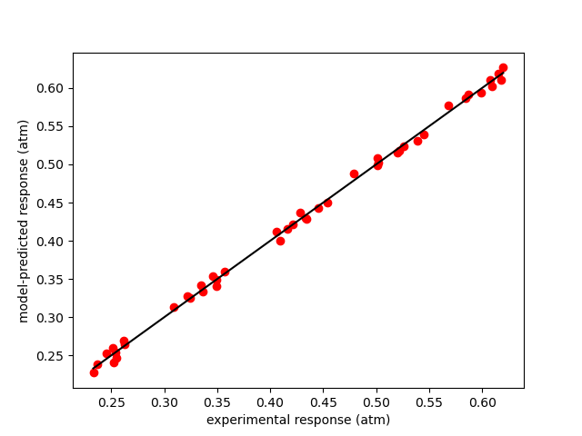
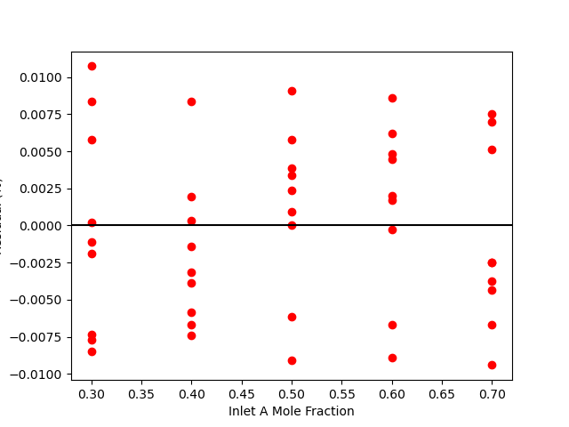
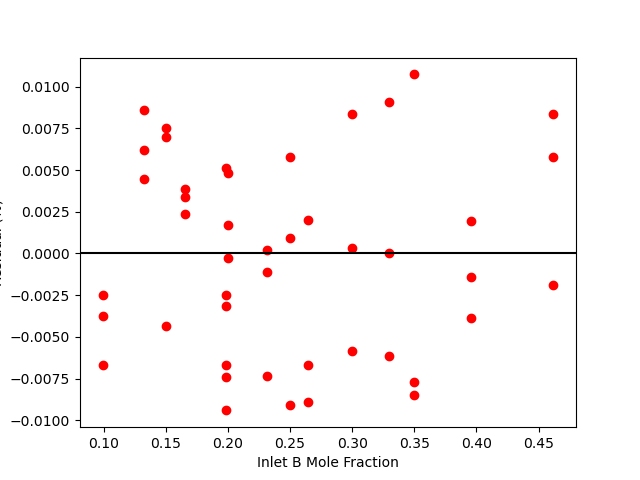
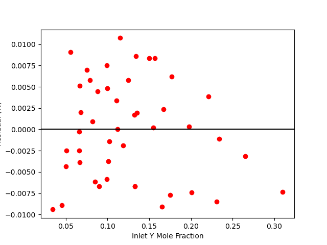
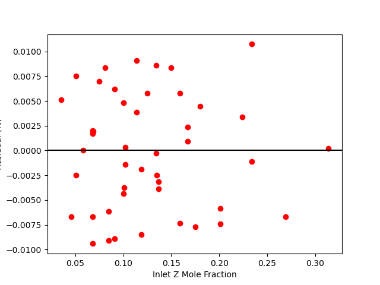
Assessment
Click Here to See What an Expert Might be Thinking at this Point
The coefficient of determination is close to 1.0, the points on the parity plot lie close to the diagonal line, and the points in the residuals plots scatter randomly about zero. This suggests an accurate rate expression. However, the upper and lower limits of the 95% confidence intervals for the parameters are significant compated to the parameter values. This suggests some inaccuracy in the model.
Based upon the parity plot, residuals plots and coefficient of determination, the rate expression in equation (2) accurately predicts the experimental results when the parameters have the values shown in Table 21.6. The confidence intervals are not narrow relative to the parameters’ values, but they are acceptable. It is possible that additional experiments at different conditions would tighten the confidence intervals for the parameters.
Note
Suppose similar blocks of experimental data had been generated at several other temperatures and that equation (2) had been found to be accurate at those temperatures. The next step would be to assess how well the rate expression captures the temperature dependence of the rate. For the rate coefficient, \(k\), this would be done by fitting the Arrhenius expression to the set of values of \(k\) from each of the data blocks.
However, there isn’t any theoretical or empirical basis for assuming that \(\alpha_A\), \(\alpha_B\), \(\alpha_Y\), and \(\alpha_Z\) obey the Arrhenius expression. In fact, it isn’t known how these parameters might vary with temperature. This is a disadvantage of using an empirical power-law rate expression.
If the estimated value of \(\alpha_A\) was effectively the same at every temperature and the same was true for \(\alpha_B\), \(\alpha_Y\), and \(\alpha_Z\), then they could be taken to be constant and the accuracy of the rate expression could be assessed by fitting the Arrhenius expression to the \(k\) values. In other words, the only temperature-dependent kinetics parameter would be \(k\). If it was accurate, equation (2) would be useful as a rate expression.
However, if the estimated values of \(\alpha_A\), \(\alpha_B\), \(\alpha_Y\), and \(\alpha_Z\) vary with temperature it would necessary to (a) find expressions that predict their variation with temperature and (b) assess the accuracy of those expressions.
If expressions for the temperature dependence of \(\alpha_A\), \(\alpha_B\), \(\alpha_Y\), and \(\alpha_Z\) could not be found, then in order to use the rate expression in equation (2) a table of their values vs. temperature would be necessary. Interpolation would need to be used for temperatures not in the table. In this scenario, equation (2) would not be very useful, even if it was very accurate in representing the individual data blocks.
21.5.3 Mechanistic Kinetics of a Heterogeneous Catalytic Reaction
In Example 21.5.2, kinetics data for reaction (1) that had been generated in a steady-state, isothermal PFR were used to assess the accuracy of a power-law rate expression. In those experiments the same amount of catalyst, 3.0 g, was present in the reactor, forming a small packed bed. The apparent density of the catalyst bed was constant, and pressure drop across the catalyst bed was negligible. The inlet volumetric flow rate was also the same in all experiments and equal to 0.85 L min-1 at standard temperature and pressure. The inlet mole fractions of A, B, Y, and Z were varied in the experiments and the partial pressure of A at the reactor outlet was recorded. Use the data for a block of experiments at 400 °C presented in that example to assess the accuracy of the mechanistic rate expression shown in equation (2). The equilibrium constant, \(K_1\), in equation (2) can be calculated from available thermodynamic data. At 400 °C the value of \(K_1\) is 12.2.
\[ A + B \rightarrow Y + Z \tag{1} \]
\[ r = \frac{kP_{A}P_{B}}{1 + K_AP_A + K_BP_B + K_YP_Y + K_ZP_Z }\left( 1 - \frac{P_YP_Z}{K_1P_AP_B} \right) \tag{2} \]
The first few data points are shown in Table 21.7; the full data set are available in the file, reb_21_2_data.csv.
| yA,in | yB,in | yY,in | yZ,in | PA,out (atm) |
|---|---|---|---|---|
| 0.3 | 0.231 | 0.155 | 0.314 | 0.254 |
| 0.3 | 0.231 | 0.234 | 0.234 | 0.263 |
| 0.3 | 0.231 | 0.310 | 0.159 | 0.262 |
| 0.3 | 0.350 | 0.115 | 0.234 | 0.252 |
| 0.3 | 0.350 | 0.175 | 0.175 | 0.245 |
| 0.3 | 0.350 | 0.231 | 0.119 | 0.251 |
| 0.3 | 0.462 | 0.079 | 0.159 | 0.233 |
| 0.3 | 0.462 | 0.119 | 0.119 | 0.237 |
Click Here to See What an Expert Might be Thinking at this Point
The only difference in this assignment from Example 21.5.2 is the rate expression to be assessed. As a consequence, the rate expression parameters to be estimated in this assignment are different.
Reactor: PFR
Given: \(P=1\text{ atm}\), \(m_{\text{cat}}=3\text{ g}\), \(\dot{V}_{in}=0.85\text{ L min}^{-1}\), \(T=400\text{ °C}\), and \(K = 12.2\).
Adjusted Inputs: \(\underline{y}_{A,in}\), \(\underline{y}_{B,in}\), \(\underline{y}_{Y,in}\), and \(\underline{y}_{Z,in}\).
Experimental Response: \(\underline{P}_A\).
Rate Expression Parameters: \(k\), \(K_A\), \(K_B\), \(K_Y\), and \(K_Z\).
Click Here to See What an Expert Might be Thinking at this Point
The reactor model, initial values, stopping criterion, ancillary equations, response function, and calculations are all the same as in Section 21.5.2.
Reactor Model
Mole balances on A, B, Y, and Z, are presented in equations (3) through (6), and the corresponding initial values and stopping criterion are shown in Table 21.8.
\[ \frac{d\dot{n}_A}{dm} = -r \tag{3} \]
\[ \frac{d\dot{n}_B}{dm} = -r \tag{4} \]
\[ \frac{d\dot{n}_Y}{dm} = r \tag{5} \]
\[ \frac{d\dot{n}_Z}{dm} = r \tag{6} \]
| Variable | Initial Value | Stopping Criterion |
|---|---|---|
| \(m\) | \(0\) | \(m_{\text{cat}}\) |
| \(\dot{n}_A\) | \(\dot{n}_{A,in}\) | |
| \(\dot{n}_B\) | \(\dot{n}_{B,in}\) | |
| \(\dot{n}_Y\) | \(\dot{n}_{Y,in}\) | |
| \(\dot{n}_Z\) | \(\dot{n}_{Z,in}\) |
Ancillary Equations
\[ P_A = \frac{\dot{n}_A}{\dot{n}_A++\dot{n}_B+\dot{n}_Y+\dot{n}_Z}P \tag{7} \]
\[ P_B = \frac{\dot{n}_B}{\dot{n}_A++\dot{n}_B+\dot{n}_Y+\dot{n}_Z}P \tag{8} \]
\[ P_Y = \frac{\dot{n}_Y}{\dot{n}_A++\dot{n}_B+\dot{n}_Y+\dot{n}_Z}P \tag{9} \]
\[ P_Z = \frac{\dot{n}_Z}{\dot{n}_A++\dot{n}_B+\dot{n}_Y+\dot{n}_Z}P \tag{10} \]
\[ \dot{n}_A\Big\vert_{m=0} = \dot{n}_{A,in} = y_{A,in}\frac{\dot{V}_{in}}{\hat{V}_{STP}} \tag{11} \]
\[ \dot{n}_B\Big\vert_{m=0} = \dot{n}_{B,in} = y_{B,in}\frac{\dot{V}_{in}}{\hat{V}_{STP}} \tag{12} \]
\[ \dot{n}_Y\Big\vert_{m=0} = \dot{n}_{Y,in} = y_{Y,in}\frac{\dot{V}_{in}}{\hat{V}_{STP}} \tag{13} \]
\[ \dot{n}_Z\Big\vert_{m=0} = \dot{n}_{Z,in} = y_{Z,in}\frac{\dot{V}_{in}}{\hat{V}_{STP}} \tag{14} \]
Response Calculation
The predicted value of the measured response can be calculated using equation (7).
Response Function
The response function is created with the following structure:
- The adjusted inputs, \(\underline{y}_{A,in}\), \(\underline{y}_{B,in}\), \(\underline{y}_{Y,in}\), and \(\underline{y}_{Z,in}\), and the rate expression parameters, \(k\), \(K_A\), \(K_B\), \(K_Y\), and \(K_Z\), are passed to it as arguments.
- Variables are defined and assigned the values of all known and given quantities: \(P=1\text{ atm}\), \(m_{\text{cat}}=3\text{ g}\), \(\dot{V}_{in}=0.85\text{ L min}^{-1}\), \(T=400\text{ °C}\), and \(K = 12.2\).
- A function that evaluates the derivatives in the design equations given values of the independent variable, \(m\), and the dependent variables, \(\dot{n}_A\), \(\dot{n}_B\), \(\dot{n}_Y\), and \(\dot{n}_Z\), is defined. It
- Calculates \(P_A\), \(P_B\), \(P_Y\), and \(P_Z\) using equations (7) through (10).
- Calculates \(r\) using equation (2).
- Evaluates and returns the values of the derivatives, equations (3) through (6).
- For each experiment, the response function
- Calculates \(\dot{n}_{A,in}\), \(\dot{n}_{B,in}\), \(\dot{n}_{Y,in}\), and \(\dot{n}_{Z,in}\) using equations (11) through (14).
- Solves the design equations using the initial values and stopping criterion in Table 21.5 to find \(\dot{n}_A\), \(\dot{n}_B\), \(\dot{n}_Y\), and \(\dot{n}_Z\) at the reactor outlet where \(m = m_{\text{cat}}\).
- Calculates \(P_A\) using equation (7).
- The values of \(P_A\) for all of the experiments are returned.
Calculations
- Pass the response function, the adjusted inputs, and the experimental responses to parameter estimation software to find \(k\), \(K_A\), \(K_B\), \(K_Y\), and \(K_Z\), the uncertainty in \(k\), \(K_A\), \(K_B\), \(K_Y\), and \(K_Z\), and the coefficient of determination, \(R^2\).
- Use the resulting value of \(k\), \(K_A\), \(K_B\), \(K_Y\), and \(K_Z\) to create a parity plot (\(P_{A,\text{ expt}}\) vs. \(P_{A,\text{ model}}\)) and residuals plots (\(P_{A,\text{ expt}} - P_{A,\text{ model}}\) vs. \(y_{A,in}\), vs. \(y_{B,in}\), vs. \(y_{Y,in}\), and vs. \(y_{Z,in}\),)
Results
The calculations were performed as described above. The resulting values of the rate expression parameters, their 95% confidence intervals, and the coefficient of determination, \(R^2\), are shown in Table 21.9. The parity plot is shown in Figure 21.4, and the residuals plots are shown in Figure 21.5.
| k | 3.88 x 106 mol L-1 min-1, 95% CI [0.0, Inf] |
| KA | 1.18 x 10-3 , 95% CI [1.18 x 10-3, 1.18 x 10-3] |
| KB | 1.18 x 109 , 95% CI [0.0, Inf] |
| KY | 6.81 x 108 , 95% CI [0.0, Inf] |
| KZ | 0.0423 , 95% CI [0.0423, 0.0423] |
| R2 | 0.995 |
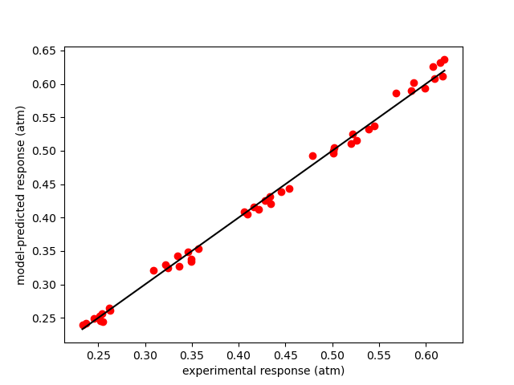
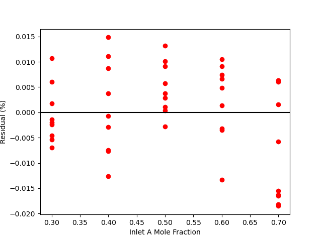
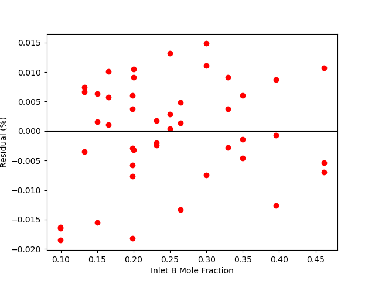
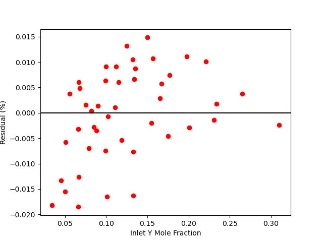
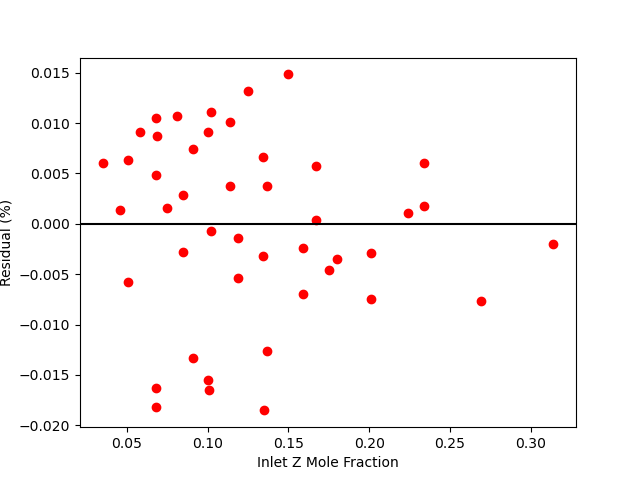
Click Here to See What an Expert Might be Thinking at this Point
Looking at the parity plot and \(R^2\), the model appears to be accurate, but there is a problem. For several of the parameters the confidence interval ranges from 0 to infinity. Based on my experience (a novice would not be expected to know this) I know that this can mean that some of the kinetics parameters are kinetically insignificant or coupled. Here, \(K_B\) and \(K_Y\) are of the order of 107. The total pressure is 1 atm, so the partial pressures will be of the order of 0.1 atm. With this information, looking at the denominator in equation (2) it is apparent that the terms containg \(K_B\) and \(K_Y\) will be much greater than the other terms (\(K_A\) ~ 10-4 and \(K_Z\) ~ 10-2), so the other terms can be eliminated.
\[ r = \frac{kP_{A}P_{B}}{\cancelto{0}{1} + \cancelto{0}{K_AP_A} + K_BP_B + K_YP_Y + \cancelto{0}{K_ZP_Z} }\left( 1 - \frac{P_YP_Z}{K_1P_AP_B} \right) \]
There is still a problem with the remaining rate expression. Specifically there cannot be a unique set of values of \(k\), \(K_B\), and \(K_Y\) that will minimize the sum of the squares of the residuals. Multiplying the numerator and denominator by any constant, \(\alpha\), does not change the rate. Therefore the rate will be the same if the parameters equal \(k\), \(K_B\), and \(K_Y\) or if they equal \(\alpha k\), \(\alpha K_B\), and \(\alpha K_Y\). In other words, the remaining parameters are coupled. This problem can be eliminated by dividing the numerator and denominator by \(K_Y\) and defining two new kinetics parameters.
\[ k^\prime = \frac{k}{K_Y} \]
\[ K_B^\prime = \frac{K_B}{K_Y} \]
\[ r = \frac{k^\prime P_{A}P_{B}}{K_B^\prime P _B + P_Y}\left( 1 - \frac{P_YP_Z}{K_1P_AP_B} \right) \]
Assessment
The uncertainty in the kinetics parameters is unacceptable. Some of the parameters in equation (2) may be kinetically insignificant or coupled. It is recommended to repeat the analysis using the rate expression shown in equation (15).
\[ r = \frac{k^\prime P_{A}P_{B}}{K_B^\prime P _B + P_Y}\left( 1 - \frac{P_YP_Z}{K_1P_AP_B} \right) \tag{15} \]
Follow-up
The analysis was repeated a third time using equation (15) as the rate expression. The parameter estimation results are shown in Table 21.10. The parity plot is shown in Figure 21.6 and the residuals plots are shown in Figure 21.7.
| k’ | 5.7 x 10-3 mol L-1 min-1 atm-1, 95% CI [4.18 x 10-3, 7.76 x 10-3] |
| KB’ | 1.73 , 95% CI [1.11, 2.7] |
| R2 | 0.995 |
Final Assessment
Based upon the parity plot, residuals plots, and coefficient of determination, the rate expression in equation (15) is just as accurate as that in equation (2). In addition, for rate expression (15), there are fewer parameters and their confidence intervals are narrow relative to their values. The rate expression in equation (15) is preferred over the rate expression in equation (2).
Note
Suppose the rate expression in equation (2) had been found to be acceptable, that similar blocks of experimental data had been generated at several other temperatures and that equation (2) had been found to be accurate at those temperatures, too. The next step would be to assess how well the rate expression captures the temperature dependence of the rate. Unlike Example 21.5.2, all of the kinetics parameters in this rate expression would be expected to display Arrhenius-like temperature dependence, making it straightforward to assess the accuracy of the rate expression with respect to temperature. Mechanistic types of rate expressions have an advantage over power-law types of rate expressions in this regard. With mechanistic types of rate expressions one knows how all of the parameters should vary with temperature, while with power-law rate expressions one does not know how the power-law exponents should vary.
21.6 Symbols Used in Chapter 21
| Symbol | Meaning |
|---|---|
| \(i\) | index denoting a reagent. |
| \(k_0\) | Pre-exponential factor in the Arrhenius expression. |
| \(\dot{n}_i\) | Molar flow rate of reagent \(i\). |
| \(m\) | Mass of catalyst. |
| \(r\) | Net rate of reaction (per unit fluid volume or per catalyst mass, depending on context). |
| \(r_p\) | Catalyst particle radius. |
| \(v\) | Fluid velocity. |
| \(y_i\) | Mole fraction of reagent \(i\). |
| \(z\) | Axial distance from the reactor inlet. |
| \(C_i\) | Concentration of reagent \(i\). |
| \(D\) | Reactor diameter. |
| \(D_{\text{eff}}\) | Effective diffusion coefficient. |
| \(E\) | Activation energy in the Arrhenius expression. |
| \(N_{Re}\) | Reynolds number. |
| \(P\) | Pressure. |
| \(P_i\) | Partial pressure of reagent \(i\). |
| \(R\) | Ideal gas constant. |
| \(R^2\) | Coefficient of determination. |
| \(T\) | Absolute temperature. |
| \(V\) | Volume. |
| \(\dot{V}\) | Volumetric flow rate. |
| \(\mu\) | Fluid viscosity. |
| \(\nu_i\) | Stoichiometric coefficient of reagent \(i\). |
| \(\rho\) | Fluid density. |
| \(\rho_{\text{bed}}\) | Apparent catalyst bed density. |
| \(\phi_s\) | Internal concentration gradient metric. |